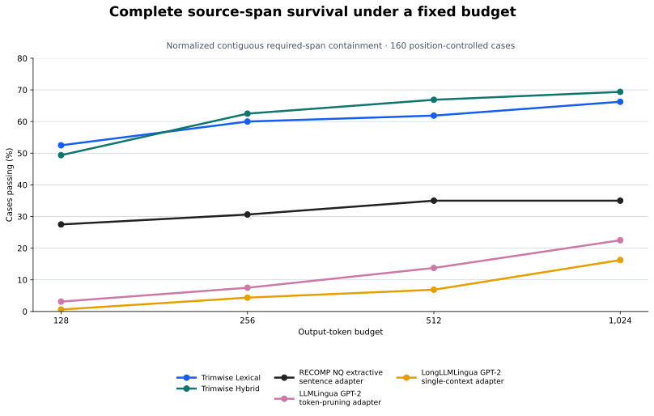

POSITION-CONTROLLED EVALUATION SUITE
Normalized contiguous required-span containment is the post-hoc primary metric over frozen outputs. Every annotated source span must survive as one contiguous normalized passage; prohibited content and budget violations still fail the case.

| Evaluated method or adapter | 128 | 256 | 512 | 1,024 |
|---|---|---|---|---|
| Trimwise Lexical | 52.5% | 60.0% | 61.9% | 66.2% |
| Trimwise Hybrid | 49.4% | 62.5% | 66.9% | 69.4% |
| RECOMP NQ extractive sentence adapter | 27.5% | 30.6% | 35.0% | 35.0% |
| LLMLingua GPT-2 token-pruning adapter | 3.1% | 7.5% | 13.8% | 22.5% |
| LongLLMLingua GPT-2 single-context adapter | 0.6% | 4.4% | 6.9% | 16.2% |
The local ordered 80% and 90% sensitivity checks preserve the same ordering at every budget. See the protocol, frozen manifest, and complete summary.